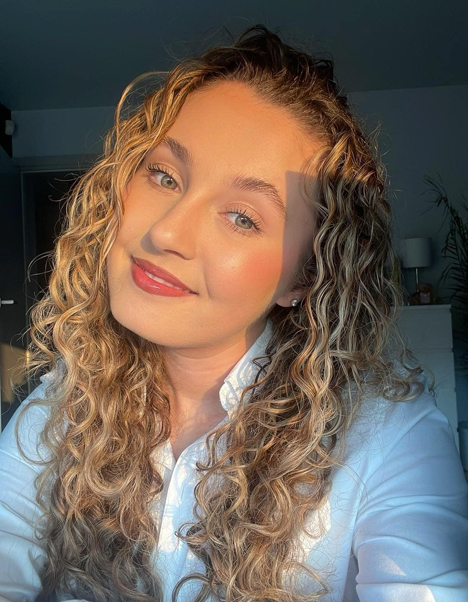
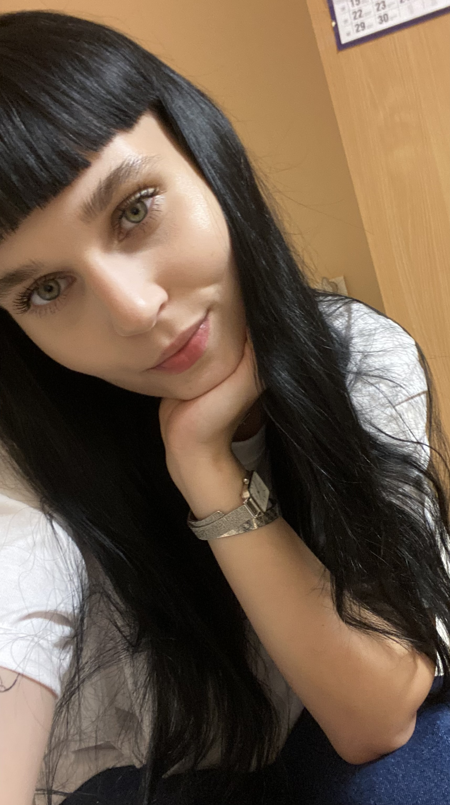

¡Hola!
Nazywam się Marysia i jestem studentką Lingwistyki Stosowanej. Nauka języków jest moją pasją, obecnie rozwijam moje umiejętności języka hiszpańskiego, angielskiego i arabskiego.
Moja przygoda z językiem hiszpańskim rozpoczęła się w liceum, od tej pory posługuje się nim biegle i uczę innych. Staram się zarazić wszystkich moją miłością do języków obcych i przedstawiać je w przyjemny sposób - dopasowany do moich uczniów!
Do zobaczenia na zajęciach!

¡Hola a todos!
Mam na imię Martyna i moja przygoda z hiszpańskim trwa już 7 lat!
Zaczęło się tak, jak u wielu z Was – od serialu „Violetta”! Te piosenki, emocje, energia… Sprawiły, że z ciekawości zajrzałam do pierwszego podręcznika. A potem? Potem to już była czysta miłość!
Dziś jestem studentką 3 roku filologii hiszpańskiej, a język hiszpański to nie tylko moje studia – to moja pasja, sposób na życie i okno na cały, fascynujący świat kultur krajów hiszpańskojęzycznych.

¡Hola mundo! ☕️🇪🇸
Mam na imię Ania, mam 23 lata i jestem studentką studiów magisterskich filologii hiszpańskiej.
Moja przygoda z językiem hiszpańskim zaczęła się niewinnie — na pierwszym roku studiów licencjackich, kiedy miał to być po prostu „inny” kierunek. Szybko jednak okazało się, że to coś znacznie więcej.
Dziś hiszpański to moja codzienność i stały element mojego życia. Przypomina dobre cafecito — trudno wyobrazić sobie dzień bez niego. Z przyjemnością zarażam nim innych. No to co, cafecito?